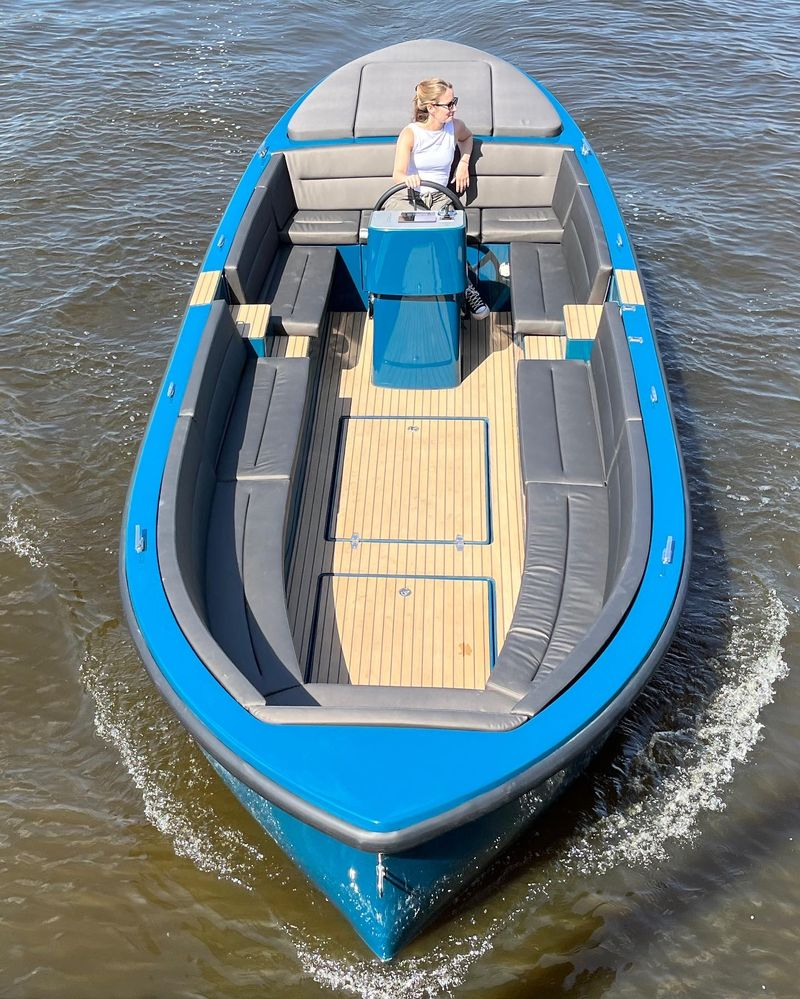
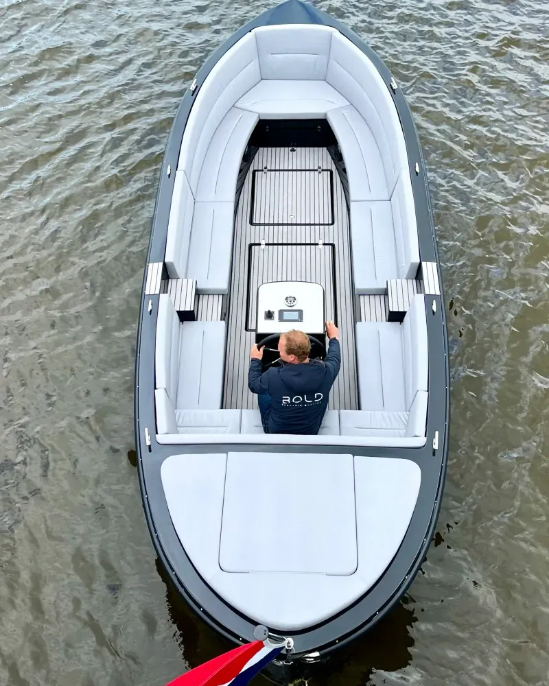
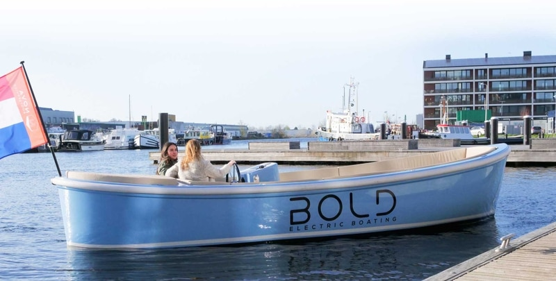
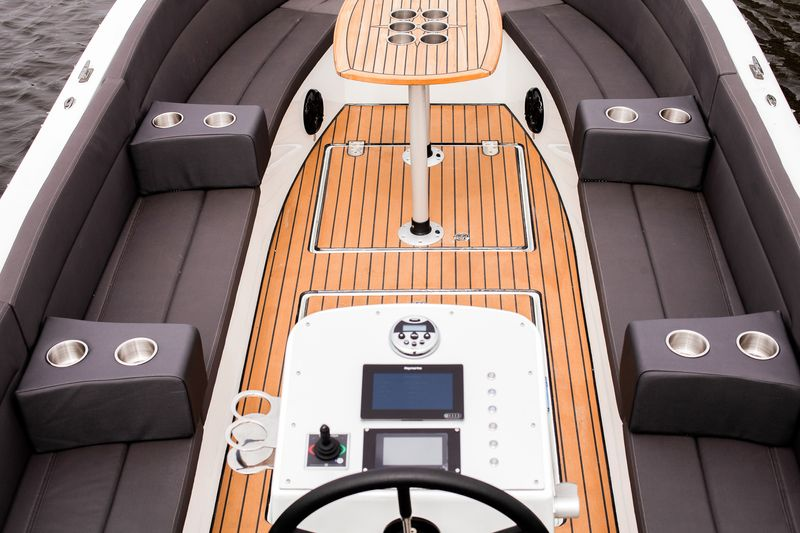
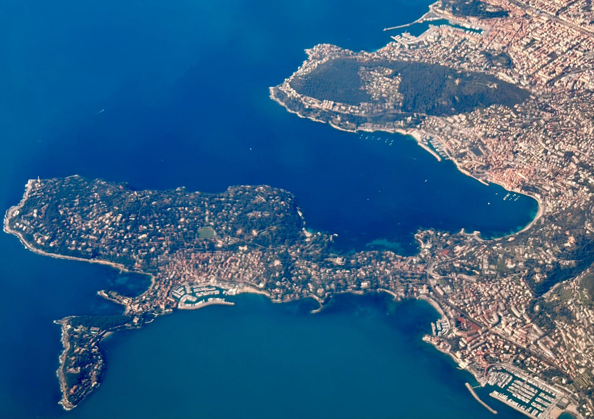

Villefranche-sur-Mer · Côte d'Azur Villefranche-sur-Mer · French Riviera Villefranche-sur-Mer · Costa Azzurra
Votre navette maritime dans la rade Your maritime shuttle in the bay La vostra navetta marittima nella rada




Nos servicesOur servicesI nostri servizi
Un service de navette maritime rapide, fiable et abordable dans toute la rade de Villefranche-sur-Mer.A fast, reliable and affordable maritime shuttle service throughout the bay of Villefranche-sur-Mer.Un servizio di navetta marittima rapido, affidabile e conveniente in tutta la rada di Villefranche-sur-Mer.
Vous êtes au mouillage dans la rade ? Nous débarquons vos passagers et équipages sur le Port de la Santé, les plages ou les restaurants.Anchored in the bay? We shuttle your guests and crew to Port de la Santé, private beaches or restaurants.All'ancora nella rada? Trasferiamo ospiti ed equipaggio al Porto della Sanità, spiagge private o ristoranti.
RéserverBookPrenotaVous gérez une plage privée ? Nous rapatrions vos clients arrivant par la mer directement sur votre établissement.Do you manage a private beach? We bring your sea-arriving clients directly to your establishment.Gestite una spiaggia privata? Portiamo i vostri clienti che arrivano dal mare direttamente da voi.
RéserverBookPrenotaDepuis le Port de la Santé, rejoignez les plus belles plages et criques de la rade à un tarif unique et abordable.From Port de la Santé, reach the most beautiful beaches and coves of the bay at a unique affordable rate.Dal Porto della Sanità, raggiungete le più belle spiagge della rada a una tariffa unica e conveniente.
RéserverBookPrenotaOffrez à vos clients une arrivée mémorable par la mer. Transfert direct depuis les yachts jusqu'à votre établissement.Offer your guests an unforgettable sea arrival. Direct transfer from yachts to your venue.Offrite ai clienti un arrivo memorabile dal mare. Trasferimento diretto dagli yacht al vostro locale.
RéserverBookPrenotaComment ça marcheHow it worksCome funziona
Choisissez votre date, heure et nombre de passagers via notre calendrier Resamare.Choose your date, time and number of passengers via our Resamare booking calendar.Scegli data, orario e numero di passeggeri tramite il nostro calendario Resamare.
Paiement sécurisé par carte bancaire. 10€ TTC aller-retour par personne, sans frais cachés.Secure payment by credit card. €10 VAT incl. return journey per person, no hidden fees.Pagamento sicuro con carta. 10€ IVA incl. andata e ritorno a persona, senza costi nascosti.
Vous recevez un email de confirmation avec tous les détails de votre transfert.You receive a confirmation email with all your transfer details.Riceverai una email di conferma con tutti i dettagli del trasferimento.
Notre bateau arrive à l'heure convenue. Embarquement rapide, transfert confortable et sécurisé.Our boat arrives at the agreed time. Quick boarding, comfortable and safe transfer.La nostra barca arriva puntuale. Imbarco rapido, trasferimento comodo e sicuro.
Réservation en ligneOnline bookingPrenotazione online
TarificationPricingTariffe
Quel que soit votre trajet dans la rade de Villefranche, le tarif est identique pour tous.Whatever your journey in the bay of Villefranche, the rate is the same for everyone.Qualunque sia la vostra tratta nella rada di Villefranche, la tariffa è la stessa per tutti.
Réserver maintenantBook nowPrenota oraZone de navigationNavigation areaZona di navigazione
Nous opérons exclusivement dans la rade de Villefranche-sur-Mer, l'une des plus belles et profondes de Méditerranée.We operate exclusively in the bay of Villefranche-sur-Mer, one of the most beautiful and deepest in the Mediterranean.Operiamo esclusivamente nella rada di Villefranche-sur-Mer, una delle più belle e profonde del Mediterraneo.

ContactContactContatto
Questions fréquentesFAQDomande frequenti